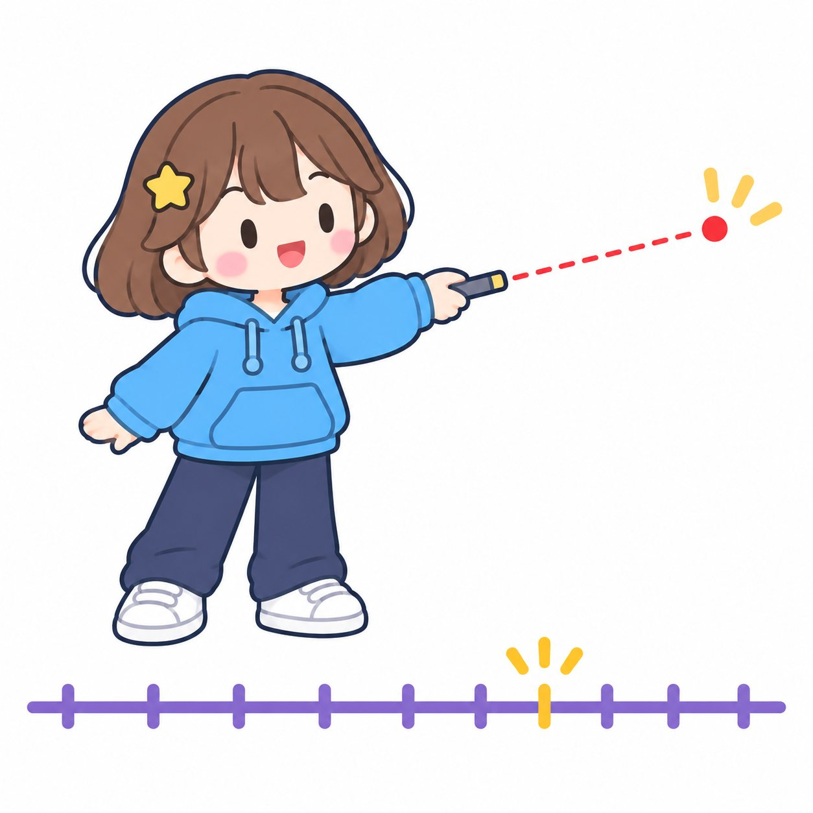
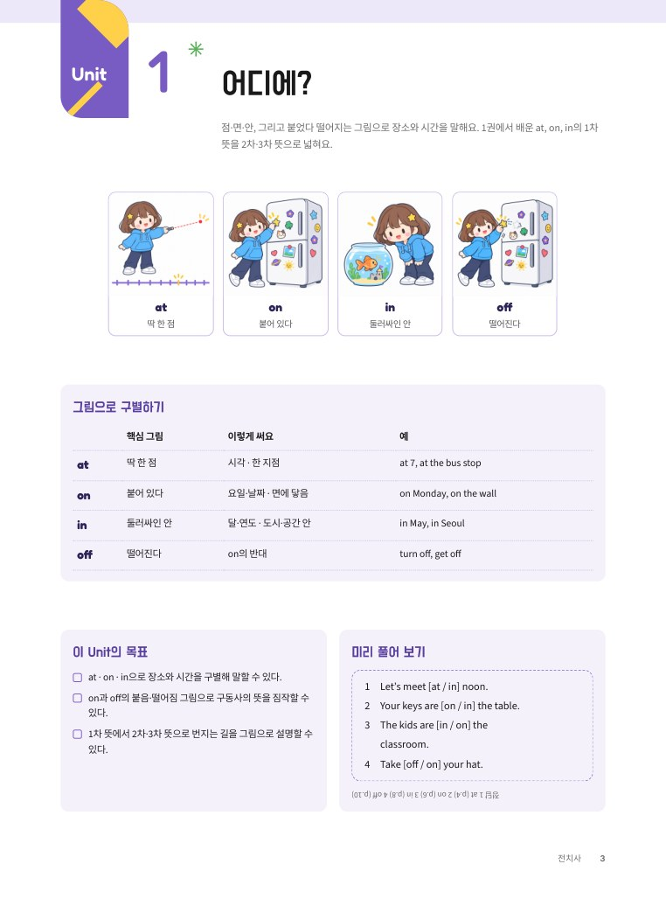
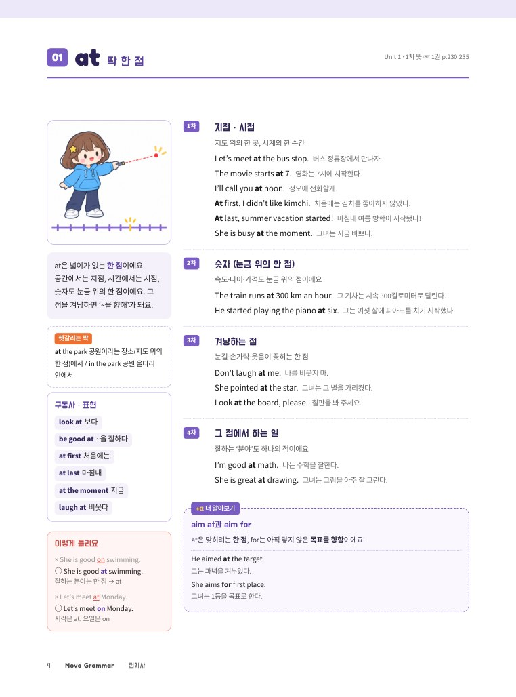
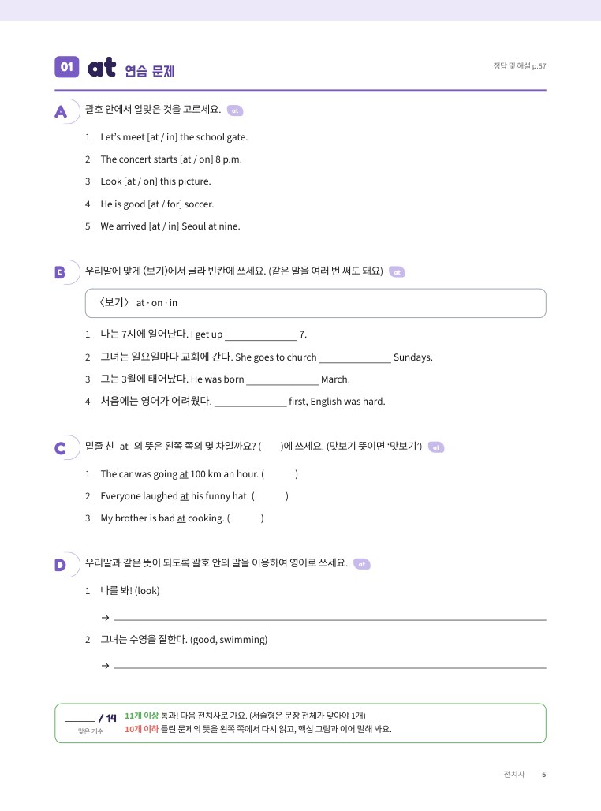
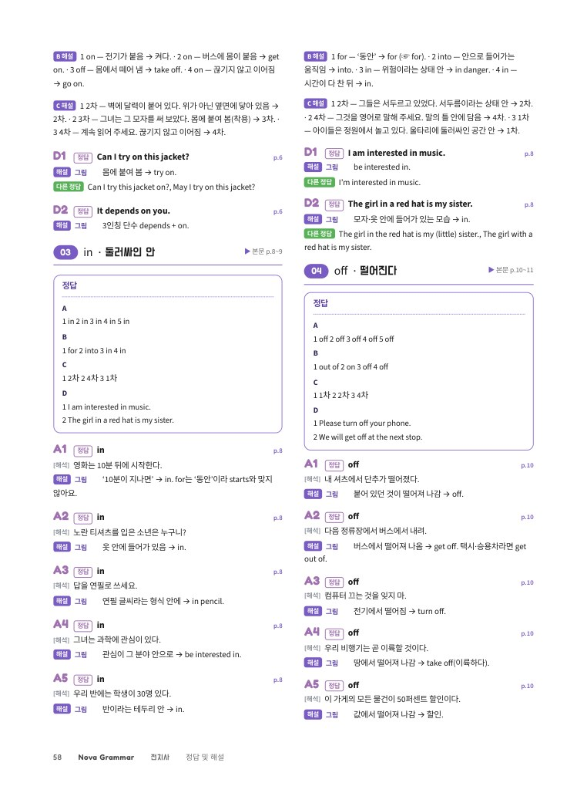

NovaGrammar
전치사 그림 하나로 뜻이 번지는 전치사 20 — 그림 · 예문 · 연습으로 끝내요
차례
Contents이 책 사용법
① Unit 여는 쪽에서 그 Unit 전치사들의 핵심 그림을 한눈에 비교하고, 미리 풀어 보기 4문제로 시작해요.② 전치사마다 펼침면 하나예요. 왼쪽 쪽에서 뜻이 번지는 길(1차 → 2차 → …)을 예문과 함께 읽고, 오른쪽 쪽의 연습 문제 14개를 풀어요. 11개 이상이면 통과!
③ Unit이 끝나면 Unit Exercise에서 그 Unit의 전치사를 섞어 풀어요(20문항, 16개 이상 통과). 헷갈리는 짝을 가려내는 연습이에요.
④ 채점은 정답 및 해설(p.57~)로 해요. +α 상자는 더 알면 좋은 내용이에요. ‘맛보기’ 딱지가 붙은 뜻과 상자는 중학교 범위를 조금 넘는 내용이라 읽어만 두면 돼요(뜻 번호를 묻는 문제에서는 ‘맛보기’라고 답해요).
⑤ 「명사와 관사」 다음, 2권 전에 공부하는 책이에요(1권 → 「명사와 관사」 → 「전치사」 → 2권). 1권 Chapter 11에서 배운 기본 뜻을 넓혀 가요.
들어가며 · 그림 하나, 뜻은 번진다
Before You Start전치사를 ‘on = 위에’처럼 뜻 하나로만 외우면 금방 막혀요. Turn on the light.의 on은 ‘위에’로는 풀리지 않거든요. 전치사마다 그림 하나를 머리에 넣으면, 그 그림에서 뜻이 차례로 번져 나가요.
우리말 낱말도 뜻이 번져요
| 손 | 내 손 → 일손이 모자라다 (일하는 사람) |
|---|---|
| 뿌리 | 나무의 뿌리 → 문제의 뿌리 (원인) |
| 눈 | 눈으로 보다 → 그림을 보는 눈이 있다 (보는 힘) |
| on | 책상 위에 닿아 있다 → 벽에 붙어 있다 → 전기가 붙어서 불이 켜져 있다 |
구동사의 뜻은 뒤에 붙은 말이 정해요
동사에 전치사나 부사가 붙어 한 덩어리로 새 뜻을 만드는 말을 구동사라고 해요. ‘구(句)’는 두 단어 이상이 모인 덩어리라는 뜻이에요. 그중 〈동사 + 부사〉(turn on, pick up)는 이어동사라고도 부르는데, 목적어가 it, them이면 가운데에 넣어요(turn it on ☞ 2권 Chapter 09 POINT 8). 〈동사 + 전치사〉(look at)는 늘 look at it이에요. 같은 turn이라도 뒤에 무엇이 붙느냐에 따라 뜻이 달라져요. 뜻을 정하는 것은 뒤의 말이에요.| turn on / off | 붙임 → 켜다 / 떨어짐 → 끄다 |
|---|---|
| turn up / down | 위로 → (소리를) 키우다 / 아래로 → 줄이다 |
| turn into | 안으로 들어감 → ~로 변하다 |
| turn around | 빙 둘러 → 뒤돌아서다 |
‘~한 상태가 되다’ 동사
get, turn, go, come은 ‘~한 상태가 되다, 되게 하다’라는 뜻을 품고 있어요. 그래서 이 동사들로 된 구동사는 ‘뒤에 붙은 말의 그림 상태가 되다’로 읽으면 쉬워요. get up 일어난 상태가 되다 · get off 떨어진 상태가 되다(내리다) · come out 밖으로 나온 상태가 되다(나오다)어디에?
점·면·안, 그리고 붙었다 떨어지는 그림으로 장소와 시간을 말해요. 1권에서 배운 at, on, in의 1차 뜻을 2차·3차 뜻으로 넓혀요.

그림으로 구별하기
| 핵심 그림 | 이렇게 써요 | 예 | |
| at | 딱 한 점 | 시각 · 한 지점 | at 7, at the bus stop |
| on | 붙어 있다 | 요일·날짜 · 면에 닿음 | on Monday, on the wall |
| in | 둘러싸인 안 | 달·연도 · 도시·공간 안 | in May, in Seoul |
| off | 떨어진다 | on의 반대 | turn off, get off |
이 Unit의 목표
- at · on · in으로 장소와 시간을 구별해 말할 수 있다.
- on과 off의 붙음·떨어짐 그림으로 구동사의 뜻을 짐작할 수 있다.
- 1차 뜻에서 2차·3차 뜻으로 번지는 길을 그림으로 설명할 수 있다.
미리 풀어 보기
at
딱 한 점Unit 1 · 1차 뜻 ☞ 1권 p.230·235at the park 공원이라는 장소(지도 위의 한 점)에서 / in the park 공원 울타리 안에서
× She is good on swimming.○ She is good at swimming.잘하는 분야는 한 점 → at
× Let’s meet at Monday.○ Let’s meet on Monday.시각은 at, 요일은 on
지점 · 시점
지도 위의 한 곳, 시계의 한 순간
Let’s meet at the bus stop.버스 정류장에서 만나자.
The movie starts at 7.영화는 7시에 시작한다.
I’ll call you at noon.정오에 전화할게.
At first, I didn’t like kimchi.처음에는 김치를 좋아하지 않았다.
At last, summer vacation started!마침내 여름 방학이 시작됐다!
She is busy at the moment.그녀는 지금 바쁘다.
숫자 (눈금 위의 한 점)
속도·나이·가격도 눈금 위의 점이에요
The train runs at 300 km an hour.그 기차는 시속 300킬로미터로 달린다.
He started playing the piano at six.그는 여섯 살에 피아노를 치기 시작했다.
겨냥하는 점
눈길·손가락·웃음이 꽂히는 한 점
Don’t laugh at me.나를 비웃지 마.
She pointed at the star.그녀는 그 별을 가리켰다.
Look at the board, please.칠판을 봐 주세요.
그 점에서 하는 일
잘하는 ‘분야’도 하나의 점이에요
I’m good at math.나는 수학을 잘한다.
She is great at drawing.그녀는 그림을 아주 잘 그린다.
aim at과 aim for
at은 맞히려는 한 점, for는 아직 닿지 않은 목표를 향함이에요.He aimed at the target.
그는 과녁을 겨누었다.
She aims for first place.
그녀는 1등을 목표로 한다.
at
연습 문제정답 및 해설 p.57괄호 안에서 알맞은 것을 고르세요. at
우리말에 맞게 〈보기〉에서 골라 빈칸에 쓰세요. (같은 말을 여러 번 써도 돼요) at
밑줄 친 at의 뜻은 왼쪽 쪽의 몇 차일까요? ( )에 쓰세요. (맛보기 뜻이면 ‘맛보기’) at
우리말과 같은 뜻이 되도록 괄호 안의 말을 이용하여 영어로 쓰세요. at
10개 이하 틀린 문제의 뜻을 왼쪽 쪽에서 다시 읽고, 핵심 그림과 이어 말해 봐요.
on
붙어 있다Unit 1 · 1차 뜻 ☞ 1권 p.230·235on the table 탁자에 닿아 있음 / above the table 떨어진 위(예: 천장의 전등)
× I saw it in TV.○ I saw it on TV.화면에 붙어 나오는 것 → on TV
× Turn on it.○ Turn it on.〈동사 + 부사〉 구동사의 대명사는 가운데
위에 닿아
면 위에 놓여 닿아 있어요
Your phone is on the desk.네 휴대폰은 책상 위에 있다.
Put the plates on the table.접시를 식탁 위에 놓아라.
Get on the bus quickly.빨리 버스에 타.
붙어 있음 (옆·아래도)
위가 아니어도 닿아 있으면 on
There is a clock on the wall.벽에 시계가 걸려 있다.
A fly is on the ceiling.천장에 파리가 붙어 있다.
연결 · 착용
전기가 이어지면 켜짐, 몸에 붙이면 입음
Turn on the light.불을 켜.
Put on your jacket.재킷을 입어.
Turn on the fan. It’s hot.선풍기를 켜. 더워.
Can I try on these shoes?이 신발 신어 봐도 돼요?
계속 이어짐
끊기지 않고 붙어서 이어져요
Go on. I’m listening.계속해. 듣고 있어.
She kept on talking.그녀는 계속 이야기했다.
받쳐 주는 것
‘A on B’ = B가 A를 받쳐요
It depends on the weather.그것은 날씨에 달려 있다.
I go to school on foot.나는 걸어서 학교에 간다.
It takes ten minutes on foot.걸어서 10분 걸린다.
on and off — 붙었다 떨어졌다
on(붙음)과 off(떨어짐)가 번갈아 오면 ‘하다 말다, 켜졌다 꺼졌다’가 돼요.It rained on and off all day.
하루 종일 비가 오다 말다 했다.
on
연습 문제정답 및 해설 p.57괄호 안에서 알맞은 것을 고르세요. on
우리말에 맞게 〈보기〉에서 골라 빈칸에 쓰세요. (같은 말을 여러 번 써도 돼요) on
밑줄 친 on의 뜻은 왼쪽 쪽의 몇 차일까요? ( )에 쓰세요. (맛보기 뜻이면 ‘맛보기’) on
우리말과 같은 뜻이 되도록 괄호 안의 말을 이용하여 영어로 쓰세요. on
10개 이하 틀린 문제의 뜻을 왼쪽 쪽에서 다시 읽고, 핵심 그림과 이어 말해 봐요.
in
둘러싸인 안Unit 1 · 1차 뜻 ☞ 1권 p.230·235in ten minutes 10분 뒤에 / for ten minutes 10분 동안
× I was born on 2012.○ I was born in 2012.연도는 긴 시간의 테두리 → in
× I’ll be back after ten minutes.○ I’ll be back in ten minutes.‘지금부터 ~ 뒤에’는 in
공간 안
벽·테두리에 둘러싸인 안
The kids are in the classroom.아이들은 교실 안에 있다.
My dad is in the kitchen.아빠는 부엌에 계신다.
I live in Seoul.나는 서울에 산다.
Wait in front of the school.학교 앞에서 기다려.
상태 안
곤경·사랑 같은 상태 속에 들어가 있어요
He is in trouble.그는 곤경에 빠져 있다.
They are in love.그들은 사랑에 빠져 있다.
These animals are in danger.이 동물들은 위험에 처해 있다.
I’m interested in robots.나는 로봇에 관심이 있다.
옷·겉모습 안
사람이 옷 안에 들어가 있어요 = 입고 있음
Who is the girl in the red coat?빨간 코트를 입은 소녀는 누구니?
You look nice in blue.너는 파란 옷을 입으니 멋져 보여.
수단·형식 안
말이나 글의 틀 안에 담아요
Write your name in English.이름을 영어로 써.
Please answer in full sentences.완전한 문장으로 답하세요.
시간이 다 찬 뒤
그 시간 안을 다 채우고 나면
I’ll be back in ten minutes.10분 뒤에 돌아올게.
The bus will come in five minutes.버스는 5분 뒤에 올 거야.
I’ll call you back in an hour.한 시간 뒤에 다시 전화할게.
sit on과 sit in
딱딱한 의자는 몸이 위에 닿아서 on, 푹신한 팔걸이의자(armchair)처럼 몸이 안에 폭 감싸이면 in을 써요.Sit on the bench.
벤치에 앉아.
Grandpa is sitting in his armchair.
할아버지는 팔걸이의자에 앉아 계신다.
in
연습 문제정답 및 해설 p.58괄호 안에서 알맞은 것을 고르세요. in
우리말에 맞게 〈보기〉에서 골라 빈칸에 쓰세요. (같은 말을 여러 번 써도 돼요) in
밑줄 친 in의 뜻은 왼쪽 쪽의 몇 차일까요? ( )에 쓰세요. (맛보기 뜻이면 ‘맛보기’) in
우리말과 같은 뜻이 되도록 괄호 안의 말을 이용하여 영어로 쓰세요. in
10개 이하 틀린 문제의 뜻을 왼쪽 쪽에서 다시 읽고, 핵심 그림과 이어 말해 봐요.
off
떨어진다Unit 1 · 1권에는 없어요 (on의 반대)버스·기차·비행기: get on ↔ get off / 택시·승용차: get in ↔ get out of
× Get off the taxi.○ Get out of the taxi.택시·승용차는 몸을 숙여 안에서 밖으로 → out of
× Take off it.○ Take it off.대명사는 동사와 off 사이
떨어져 나감
붙어 있던 것이 떨어져요
A button came off my coat.외투에서 단추가 떨어졌다.
Keep off the grass.잔디밭에 들어가지 마시오.
The plane took off at 3.비행기는 3시에 이륙했다.
He fell off his bike.그는 자전거에서 떨어졌다.
연결이 끊김 (꺼짐)
전기에서 떨어지면 꺼져요
Turn off your phone.휴대폰을 꺼.
Did you turn off the oven?오븐 껐니?
몸에서 떼어 냄 · 내림
옷을 떼면 벗고, 탈것에서 떨어지면 내려요
Take off your shoes.신발을 벗어.
Get off the bus here.여기서 버스에서 내려.
Let’s get off here.여기서 내리자.
하던 일·값에서 떨어짐
일에서 떨어지면 쉬는 날, 값에서 떼면 할인
I have a day off tomorrow.나는 내일 쉬는 날이다.
Everything is 20% off.모두 20퍼센트 할인이다.
Sunday is my day off.일요일은 내가 쉬는 날이다.
off는 그대로, 동사만 바꾸면
‘떨어짐’은 그대로 두고 동사만 바꾸면 어떻게 떨어지는지가 달라져요.take off · cut off · fall off · run off
벗겨 떼다 · 잘라 떼다 · 떨어져 나가다 · 달아나다
off
연습 문제정답 및 해설 p.58괄호 안에서 알맞은 것을 고르세요. off
우리말에 맞게 〈보기〉에서 골라 빈칸에 쓰세요. (같은 말을 여러 번 써도 돼요) off
밑줄 친 off의 뜻은 왼쪽 쪽의 몇 차일까요? ( )에 쓰세요. (맛보기 뜻이면 ‘맛보기’) off
우리말과 같은 뜻이 되도록 괄호 안의 말을 이용하여 영어로 쓰세요. off
10개 이하 틀린 문제의 뜻을 왼쪽 쪽에서 다시 읽고, 핵심 그림과 이어 말해 봐요.
Unit Exercise
정답 및 해설 p.59괄호 안에서 알맞은 것을 고르세요. Unit 1
우리말에 맞게 〈보기〉에서 골라 빈칸에 쓰세요. (같은 말을 여러 번 써도 돼요) Unit 1
밑줄 친 전치사는 모두 틀렸어요. 우리말 뜻에 맞게 바르게 고쳐 쓰세요. Unit 1
나는 부산에 산다.
10분 뒤에 보자.
벽에 포스터가 붙어 있다.
여기서 신발을 벗어 주세요.
우리말과 같은 뜻이 되도록 괄호 안의 말을 이용하여 영어로 쓰세요. Unit 1
15개 이하 틀린 문제의 전치사 펼침면으로 돌아가 그림부터 다시 봐요.
그림 하나로
뜻이 번지는 전치사
on = ‘위에’ 하나로 외우면 금방 막혀요.
핵심 그림에서 2차·3차 뜻으로 번지는 길을 따라가며
전치사와 구동사를 한 번에 익혀요.
1핵심 그림 한 장
전치사 20개마다 핵심 그림 한 장에서 시작해 1차 → 2차 → 3차 뜻으로 넓혀 가요.
2구동사까지
뜻 번호를 붙인 구동사 예문으로 look for, turn on 같은 말이 왜 그런 뜻인지 이해해요.
3펼침면마다 연습
왼쪽 쪽에서 읽고 오른쪽 쪽에서 14문항을 바로 풀어요. Unit Exercise로 헷갈리는 짝을 가려내요.
4이렇게 틀려요 · +α
자주 하는 실수와 더 알면 좋은 내용을 따로 모으고, 모든 문항에 자세한 해설을 붙였어요.

Unit 여는 쪽
뜻이 번지는 길
연습 문제
정답 및 해설